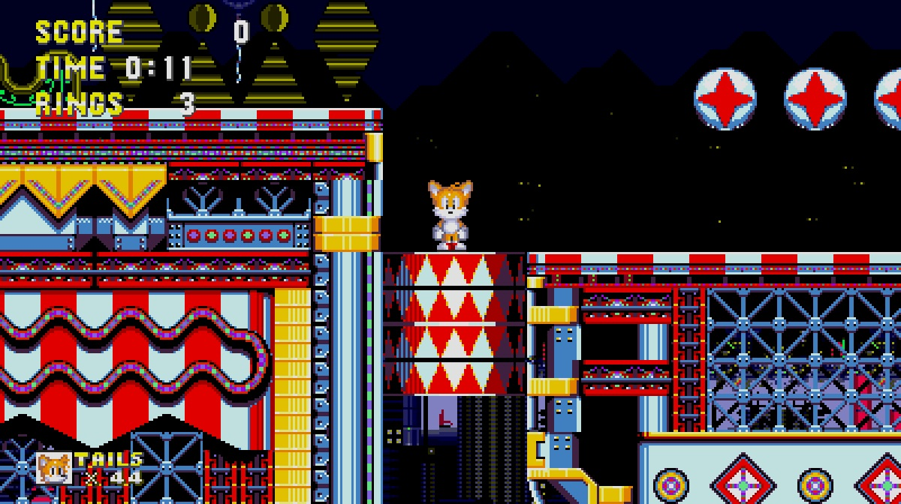
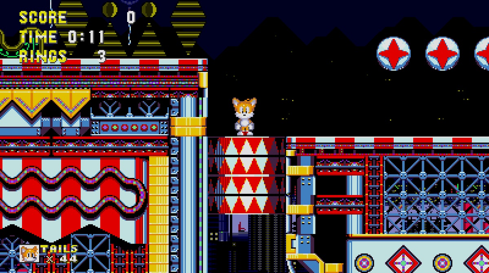

Download


Sonic 3 Style
I decided to do what Sega didn't and give Tails a Sonic 3 makeover. I used the flying and waving sprites as a reference and built everything else from there. All sprites are created entirely by me. Make sure to put this mod in higher priority to mods that change Data Select sprites, Competition sprites, ending sprites, and Tornado sprites.
Mod by panoramhusky


 
